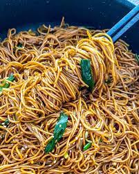

Fried noodles

Ingredients
- 250g Hong Kong-style egg noodles
- 2 tablespoons vegetable oil
- 2 cloves garlic, minced
- 1/2 cup sliced onions
- 1/2 cup julienned carrots
- 1/2 cup sliced bell peppers (a mix of colors)
- 1/2 cup sliced shiitake mushrooms
- 1/2 cup bean sprouts
- 2 tablespoons light soy sauce
- 1 tablespoon oyster sauce
- 1 teaspoon sugar
- 1/2 teaspoon sesame oil
- Salt and pepper to taste
- Green onions, chopped (for garnish)
Process
- Cook the Hong Kong-style egg noodles according to the package instructions.
- Drain and rinse the noodles under cold water to stop the cooking process.
- Toss the noodles with a bit of oil to prevent sticking and set aside.
- In a small bowl, mix together the light soy sauce, oyster sauce, sugar, and sesame oil. Set aside.
- Heat vegetable oil in a wok or large skillet over medium-high heat.
- Add minced garlic and stir-fry for about 30 seconds until fragrant but not browned.
- Add sliced onions, julienned carrots, sliced bell peppers, and shiitake mushrooms.
- Stir-fry for 2-3 minutes until the vegetables are slightly tender but still crisp.
- Add the cooked and drained noodles to the wok.
- Toss the noodles with the vegetables to combine evenly.
- Pour the prepared sauce over the noodles and vegetables.
- Use chopsticks or tongs to gently toss everything together until well coated.
- Add bean sprouts and continue tossing for an additional 1-2 minutes until the bean sprouts are slightly wilted.
- Season with salt and pepper to taste. Adjust the seasoning if needed.
- Transfer the Hong Kong-style fried noodles to a serving dish.
- Garnish with chopped green onions.